本文档总结了我过去编程时使用人工智能辅助开发的一些个人经验。
更新记录
| 时间 | 说明 |
|---|---|
| 2024.3.6 | 补充使用场景-单测的注意项 |
前言
2022年是不平凡的一年，从Stable Diffusion（文生图模型）以开源形式引爆 AI 创作，到 ChatGPT 一周内就突破了百万级用户注册，全球出现了无数AIGC（人工智能生成内容）的产品和创业公司。从文本、图像乃至视频，掀起了巨大的 AIGC浪潮。
那么对于我们开发人员来说，应该如何正确地拥抱AI，如何更好的使用AI辅助软件开发，本文档将从这些方面展开。
本次分享的初衷是希望成为你深入使用人工智能辅助开发的引路人，使大家构建出适合自己的开发指南。
软件开发趋势
2024年，多份开发者调查报告显示，AI工具在开发领域的应用已经达到了空前的普及度：
- Go2024下半年开发者报告显示，大多数受访者（70%）在使用 Go 进行开发时都使用 AI 助手。
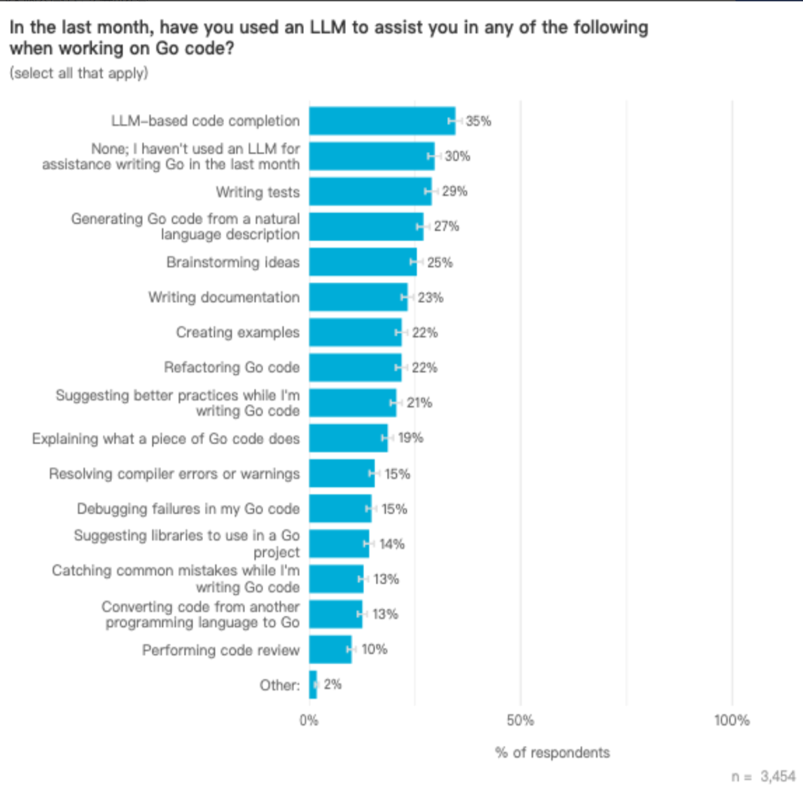
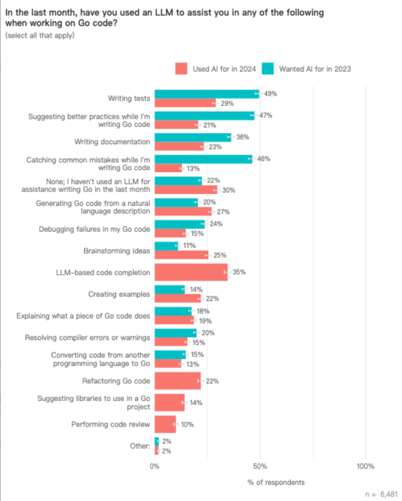
- StackOverflow 2024开发者报告（5月份的报告）中76%的受访者正在使用或计划在开发过程中使用 AI 工具。（23年为70%）
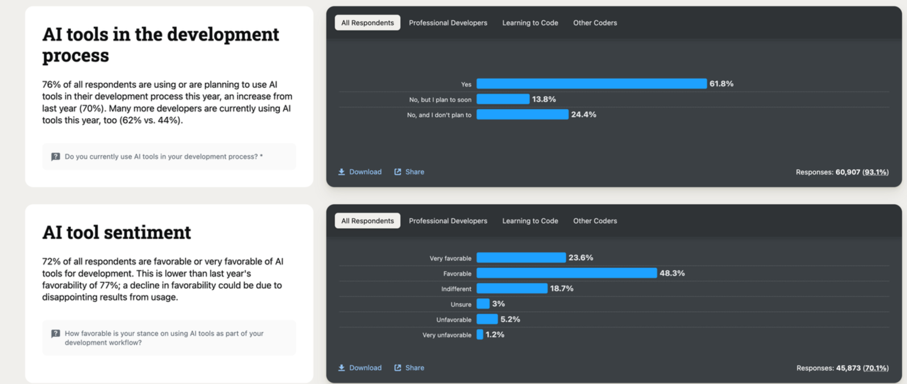
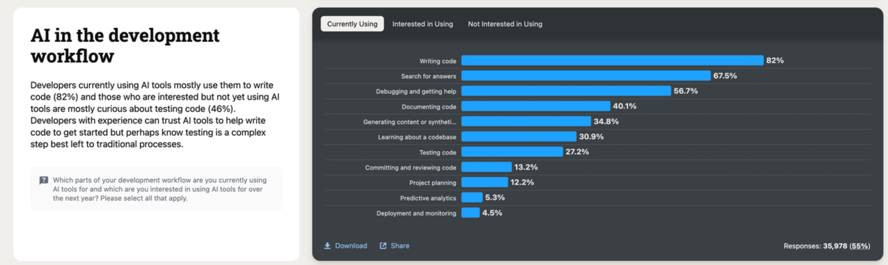
- Github调查报告，对美国、巴西、印度和德国企业的 2,000 名开发人员进行了调查，了解生成式 AI 工具在软件开发中的使用、经验和期望。几乎所有的调查参与者都表示在工作之外或工作中都使用过 AI 编码工具。
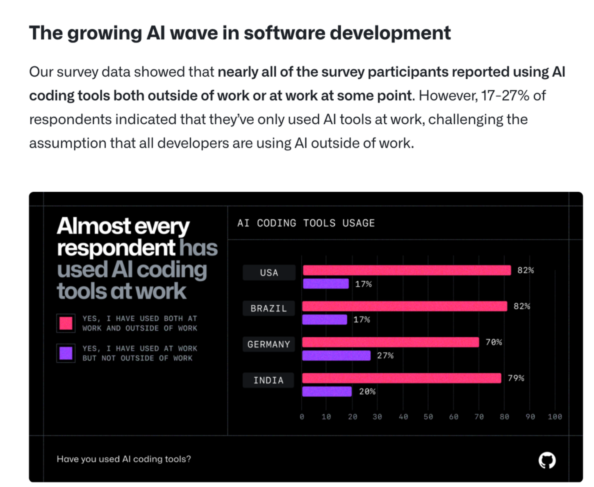
- jetbrains开发者报告 认为AI没有提高效率的仅占4%，大部分认为AI每周可以节省1-2小时。
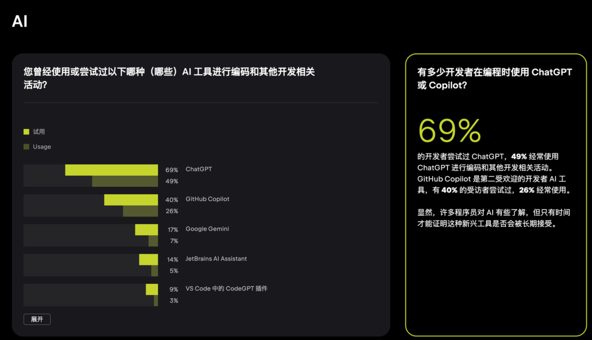
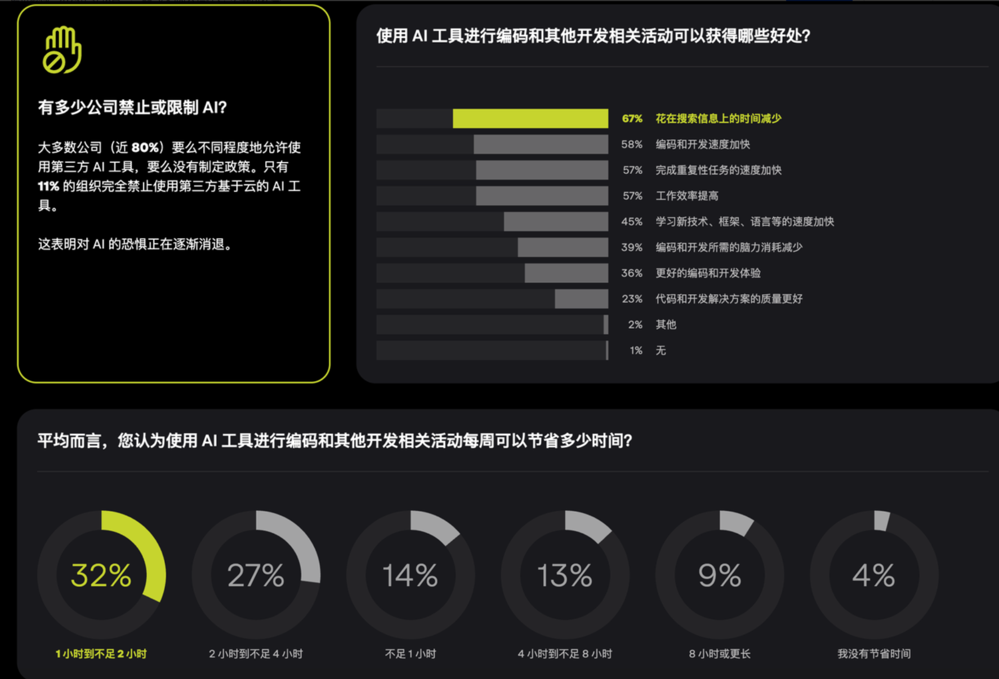
总结
AI 已成为软件工程不可或缺的一部分，从这些报告可清晰的看出，AI正深刻地改变软件开发领域，为开发者带来多方面的影响和机遇，越来越多的开发者开始拥抱AI，其中大部分人开发人员使用AI的主要目的还是提高生产力。
工具推荐
目前在编程领域比较强的模型，速度性能都不错，个人平时比较喜欢使用的模型。
AI IDE，功能强大，基于开源VSCode二开。可以白嫖免费额度，底层模型支持Claude，GPT，DeepSeek等一线模型。
同样作为第一代的代码补全工具，原生仅付费可用，被Cursor卷的放出了免费额度。
让全世界开始卷LLM的源头。能力更加通用。
- 其他
- DeepSeek 免费使用，目前最强开源LLM，真正的OpenAI！。
- perplexity 人工智能搜索引擎。
- Grok 马斯克的LLM，自称目前最强LLM，目前免费使用。
文生图，文生视频，图生视频以及其他ai工具就太多了。对我们平时开发接触不多或功能不太行，就在这里介绍了。
选择合适的模型
| 推理模型（Deeseek R1， ChatGPT-o1等等） | 非推理模型（DeepSeek V3， ChatGPT4，cluade3.5等等） | |
|---|---|---|
| 速度与成本 | 很慢，成本高 | 快且成本低 |
| 准确性和可靠性 | 较高，推理任务 (数学计算、逻辑推理、代码生成) 通常需要唯一正确答案，不易出现逻辑漏洞，因为它在内部做了多步验证。 | 一般，根据temperature有一定随机性。 |
| 创造性 | 一般 | 灵活，根据temperature可加入更多随机性，有更多的创造性。 |
| 适用场景 | 对复杂任务进行深入分析，推理任务(数学计算、逻辑推理、代码生成) 。 不太适用于简单琐碎任务（可能会产生大量不必要的冗长分析） | 其他通用场景，速度要求较高的场景，简单任务。 |
当然，目前业界也在探索混合架构，例如使用通用 LLM 进行问题理解，然后把逻辑思考部分拆分给推理模型，最后再用通用模型组织语言润色输出。
提示词工程
提示工程是一门设计和优化提示的艺术和科学，可指导 AI 模型（尤其是 LLM）生成所需回答。通过精心设计提示，您可以为模型提供上下文、说明和示例，帮助模型理解您的意图并做出有意义的回答。您可以将其视为 AI 提供一个路线图，引导它朝着您预想的特定输出的方向前进。
写好提示词，可以让你得到更好的答案。简单介绍一些比较常用的技巧。
保持清晰、直接和详细
-
提供足够的上下文信息，一个好的标准是： **像对待技术同事一样对待人工智能——提供足够的背景信息，并确保信息一致。**上下文信息的一些例子：
- 任务结果将用于什么。
- 输出内容面向什么受众。
- 任务属于什么工作流程，以及这个任务在工作流程中的位置。
- 任务的最终目标，或者成功完成任务是什么样子。
-
具体说明你想要LLM做什么： 例如，如果你只想要LLM输出代码而不要其他内容，就要明确说明。
-
按顺序提供指示： 使用编号列表或项目符号，以更好地确保LLM按照你想要的方式执行任务。
Bad
1 | 分析这份OpenAI宕机报告并总结关键点。 |
Good
1 | 分析这份OpenAI宕机报告。跳过前言。保持回应简洁，只写最基本的必要信息。仅列出： |
使用示例来引导
示例可以让LLM更精准的输出你想要的结果，可以显著提升输出的准确性、一致性和质量。对于需要结构化输出或遵循特定格式的任务特别有效。
-
准确性: 示例减少对指令的误解。
-
一致性: 示例确保统一的结构和风格。
-
性能: 精心选择的示例可以提升LLM处理复杂任务的能力。
Bad
1 | 从以下文本中提取以下内容：时间、地点、人名、主题。 |
Good
1 | 从以下文本中提取以下内容：时间、地点、人名、主题。 |
1 | 基于以下示例将数字列表规范化为 [0， 1] 范围： |
思维链（CoT）
在面对研究、分析或问题解决等复杂任务时，给LLM思考的空间可以显著提高其表现。这种被称为思维链（CoT）提示的技术，鼓励LLM逐步分解问题，从而产生更准确和细致的输出。
为什么要让LLM思考？
-
准确性：逐步解决问题可以减少错误，尤其是在数学、逻辑、分析或一般复杂任务中。
-
连贯性：结构化思维可以产生更连贯、组织更完善的回答。
-
调试：查看LLM的思维过程有助于你找出提示可能不清晰的地方。
为什么不让LLM思考？
-
增加输出长度可能影响延迟。
-
并非所有任务都需要深入思考。明智地使用思维链，以确保性能和延迟之间的适当平衡。
-
推理模型本身的思维链质量已经很好了，不需要再额外引入。
例子：
没有使用CoT时：
使用CoT：
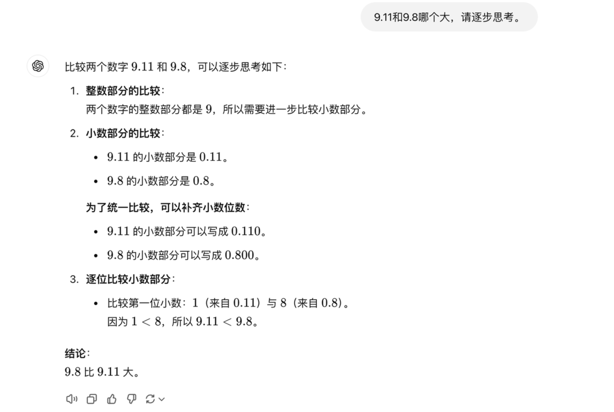
引导问题
提示中的引导问题通常可以让LLM保持中立和公正。避免做出假设，而是把事情说清楚。
有引导性的提示词
1 | 迁移到微服务架构总是会提高系统可扩展性吗？ |
更加平衡的提示词
1 | 在系统可扩展性方面，迁移到微服务架构的优势和潜在挑战是什么？ |
尽量避免提出开放式问题
这种类型的提示会让LLM猜测或过度概括。还可能误解问题的意图或答案的期望，导致回答偏离主题或包含捏造的信息。实际上可能会有一连串的幻觉。
Bad
1 | 优化数据库有哪些不同的方法？ |
Good
1 | 以下哪种是优化数据库的方法：索引、碎片整理还是压缩？ |
为每个不同的任务启动新的AI聊天
目前的LLM有上下文的原因是，每次输入都会将全部对话作为模型输入，从而做到使模型拥有上下文，主打一个大力出奇迹。那么就会有衍生的问题：
-
上下文有token限制。
-
上下文过多会导致LLM"失忆"，丢失部分上下文信息。
-
不同任务在同一个context中会产生干扰
为了解决这些情况，对于不同的任务或者聊天轮次较多的情况下需要启动新的聊天，来达到更好的效果。
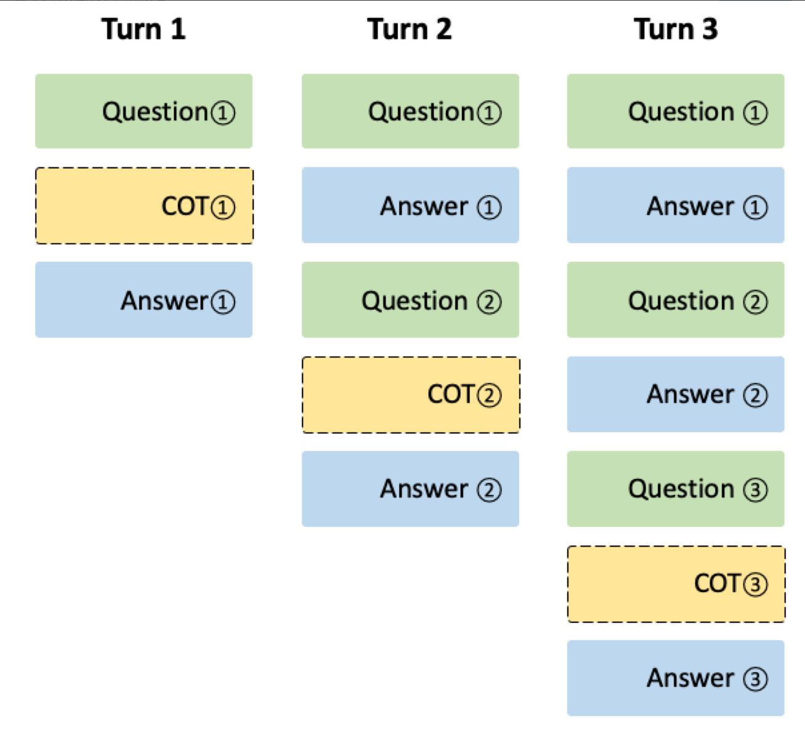
推理模型一些技巧
使用推理模型需要注意的点
-
**保持提示简洁明确。**使用简洁直接的指令。更适合于专注且不含多余信息的问题或任务。对推理模型避免过于复杂或带有倾向性的提示。（提供必要的上下文）
-
**尽量使用零示例或极少示例。**优先采用零示例模式。只有当模型理解有误或者格式不对时，才加入简短的示例作为演示。因为推理模型本身不需要大量示例来引导。
-
**不需要使用CoT。**本身的思维链已经足够优秀了。
让模型反思和检查提高一致性和错误处理
简单来说就是对结论做验证，提高准确性。
-
在任务完成之前，要求用简单的测试验证工作。
-
指示模型分析其前一步是否达到了预期结果。
-
对于编码任务，要求运行测试用例。
例如：
1 | 编写一个计算数字阶乘的函数。 |
深入思考任务，不要逐步指导
推理模型通常在高层次指令下表现更好，只需要深入思考任务，而不是逐步规定性的指导。
Bad
1 | 逐步思考这个数学问题： |
Good
1 | 请深入详细地思考这个数学问题。 |
优化提示词
当然也可以直接使用LLM来优化提示词，一般可以通过RAG提供示例知识库，使得优化效果更好点，在文生图，图生图，文生视频领域，优化提示词会使用的更多一点。
提示词模版：
1 | Create a GPT prompt based on the following task requirements: |
进阶资料
提示词工程相关资料
https://www.promptingguide.ai/zh
https://github.com/dair-ai/Prompt-Engineering-Guide
https://github.com/ai-boost/awesome-prompts （提示词示例）
https://github.com/promptslab/Awesome-Prompt-Engineering
https://docs.anthropic.com/en/docs/build-with-claude/prompt-engineering/overview
https://bytetech.info/articles/7431770179308093449#BeDOdBuZ0oCJUuxUJfMcb9cznwd（优化提示词模版来源）
https://github.com/LouisShark/chatgpt_system_prompt （获取system prompt）
提示词优化工具
https://promptperfect.jina.ai/
https://console.anthropic.com/dashboard
https://chatgpt.com/g/g-5XtVuRE8Y-prompt-engineer
https://colab.research.google.com/drive/1SoAajN8CBYTl79VyTwxtxncfCWlHlyy9
编码辅助开发工具
主要以Copilot、Cursor、Marscode 或类似插件等高级工具为主。
其核心功能大概可以分为以下部分：
| 功能 | 描述 |
|---|---|
| 代码建议 | 根据注释和文件上下文提供代码建议;推荐单行多行，整个函数，多行编辑。 |
| 上下文感知 | 提供基于全部或部分代码库的上下文感知代码完成，以及帮助编码的建议 |
| 测试生成（单测，接口测试等等各种测试） | 分析代码以生成有意义的测试，生成边界case，保软件可靠性。 |
| 用户与 IDE 交互 | 当用户在 IDE 中键入代码时，自动激活并提供指导;用户可以通过聊天与代码交互。 |
| 代码分析 | 分析代码片段、文档字符串和注释，以提供可靠的代码预测并标记可疑代码。 |
| 错误检测和修复 | 识别代码中的潜在错误并建议修复它们的方法。 |
| 代码自动文档 | 自动添加文档字符串并增强代码文档。 |
| 自动化代码 | 自动构建代码并应用，就行纠错，完成开发等。 |
这些工具的核心工作原理是分析项目代码（构建索引），并将其与特定提示一起直接传递给外部LLM。它的工作原理如下：
-
代码上下文收集：插件扫描您的项目以收集必要的上下文。（包括构建RAG）
-
提示词生成：根据上下文，工具将创建一个提示，概述您所需的信息或帮助。
-
查询 LLM：提示被发送到外部LLM，外部LLM处理输入并提供响应。
-
输出生成：LLM 的响应根据项目代码进行定制，或者，如果项目是新的，它会提供由模型训练数据塑造的一般响应。
使用场景&使用小技巧
如何使用
什么时候适合使用
-
**重复性的工作。**对于重复性的工作，或者假设训练集包含一些至少与给定任务有些相似的东西，这种情况下LLM可以做的很好。例如重复代码，大部分代码补全工具都会将一些相关上下文传给LLM，甚至有些做了RAG，一些重复代码完成可以让LLM直接模仿生成。
-
**在不擅长的领域更快地前进。**如果你刚接触某个领域或对某个领域完成一窍不通，LLM可以帮助你快速了解相关知识，辅助你学习，甚至为你定制学习计划。又或是帮你直接完成这件事，例如一些完全不会代码的人，完成他的创意，也就是：人类洞察力 + LLM苦力 = 创意出版。
-
**当编写提示词比完成这件事更快时。**有时自己编写代码比使用 AI 辅助编程工具更简单。毕竟，可能需要多次尝试才能让AI抓住你需要的东西。不过实际上不是那么容易评估的，特别是对刚开始使用AI工具的人而已，可以做的是当进行几轮对话后，明显感觉很难通过LLM完成，不妨暂时放下LLM。随着持续使用这些 AI工具，您将掌握弄清楚它们何时有用或何时更适合独门技巧。
-
**当你不想思考时，节省脑力。**对于某些事情，LLM是更好的选择。例如看到一个无效的JSON数据，甚至无法解析或是超长的错误信息等。
什么时候不应该使用
-
**直接实现复杂业务功能。**对于实现复杂功能，LLM可能无法理解全部内容，并且LLM存在丢上下文的问题，如果问题过于复杂可能开始瞎回答，需要把复杂任务拆分成多项任务才能取得更好的效果。
-
**创新。**LLM可以陪你脑暴，但是目前的LLM很难给出你一个创新的东西或是以前不存在的东西。
-
**不接受错误的场景。**LLM无法保证100%的正确性，如果无法容忍可能出现错误，那么不应该使用他。（人类也会犯错，其实问题在于谁来承担错误以及纠错的成本）好在编程领域纠错的成本较低，还是有比较大的容忍度。
使用需要注意什么
-
注意数据安全问题。小心不要把一些重要信息上传到GPT等LLM中。公司内使用编码辅助工具的话目前只能使用MarsCode和trae，其他大部分工具都需要将代码传到云端。
-
**注意LLM幻觉。**简单来说就是LLM在一本正经的胡说八道，编造答案。虽然他们可以给出非常权威的代码片段或编码问题的答案，但他们也可以凭空捏造。 例如有时候他会建议你使用不存在的库的功能。假设LLM可以给你90%的正确答案，那么你需要更加小心剩下10%的错误答案，他可能会一直误导你的结论，仔细检查这些 AI 工具提供的一切。
-
不可过度依赖。LLM生成的业务代码不断堆积后，可能会导致可维护性快速下降，最后定制好项目规范，需要做好代码审查。
具体场景
生成单测
避坑
先举个bad case，避雷一下：直接生成单测有先射箭再画靶的嫌疑。建议输入预期的效果再来生成。
例如：我想要的逻辑是如果金额<20，则返回20，如果金额在20-30之间则返回对应金额，如果金额>30，则返回上限30，但是我代码手抖写错了，让AI生成单测，单测对应的case也是错的。
使用
如果函数相对独立，业务不是特别复杂的，可以生成质量较高的单测，特别是一些独立的小函数，基本不用改就能用。
即使是比较复杂的函数，也可以用他来生成个模版，有时候可能会给你一个惊喜。
需要注意的点是：生成的代码虽然快，但是后续维护的成本会上升，但是目前的单测代码维护性本身也很差🐶，个人感觉也还好。
其他的单测生成工具：https://bytetech.info/articles/7438872520335294475?searchId=2025022609521077019B78C478E86F00FA
人工智能搜索
作为搜索工具来使用，进行一些问题查询，信息收集等等，也是目前LLM最热门的使用方式之一。
简单来说就是你不用再去Google结果中检索你想要的问题答案。使用Google 搜索某些内容时，你可能经常无法找到针对特定问题的答案，在没有LLM时，遇到问题时在Google， stackoverflow中搜索问题解决方案花费30分钟甚至更多时间的情况并不少见，而直接询问LLM时，它会以简洁的方式向你解释一些事情（拥有最庞大的知识储备）。总的来说，他可以节省你对搜索结果再进行信息收集和信息过滤的时间。
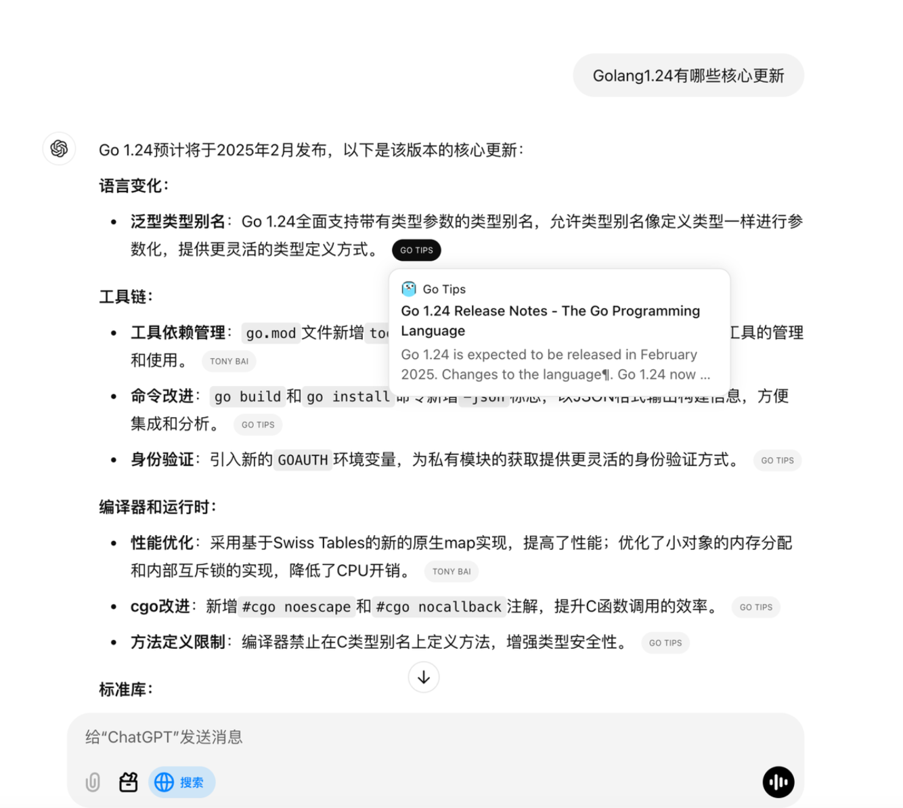
当作开发者工具箱使用
当作一个工具箱来使用，例如：
- 写正则，反向解析正则（终于不用记正则啦🫡）。
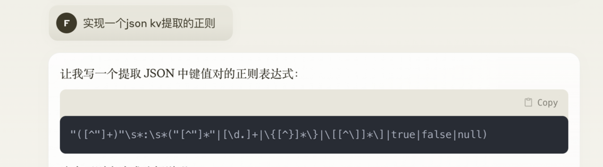
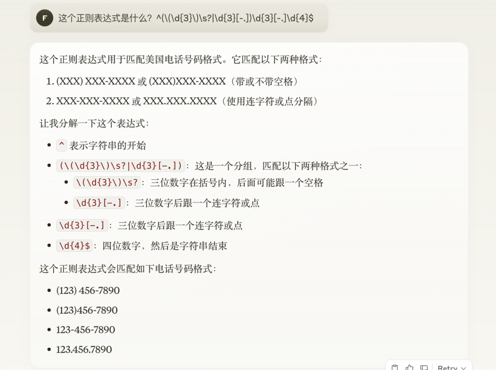
-
表单行列转换。
-
格式化。（类似的也可以进行一些重构）
-
各种结构转换。（例如表结构转json，json转sql，sql转Go结构体等等）
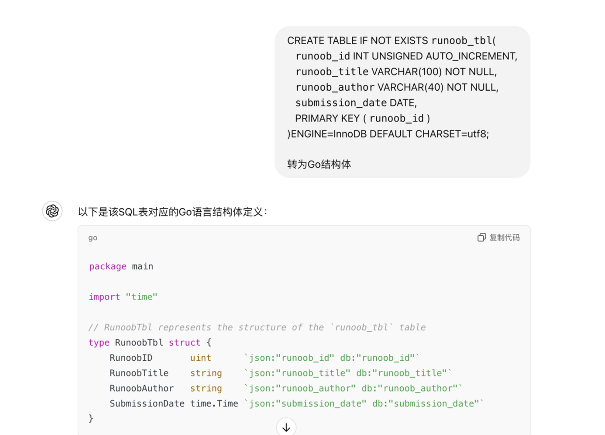
写工具
快速撸一个工具或脚本。每当工作中遇到啥觉得不方便的时候，就可以想想能不能快速搞一个小工具，来解放生产力。
例如
- 我没写过chrome插件，但是只想快速撸一个简单的复制功能，成本特别低，类似的还有实现一个vscode插件等等。
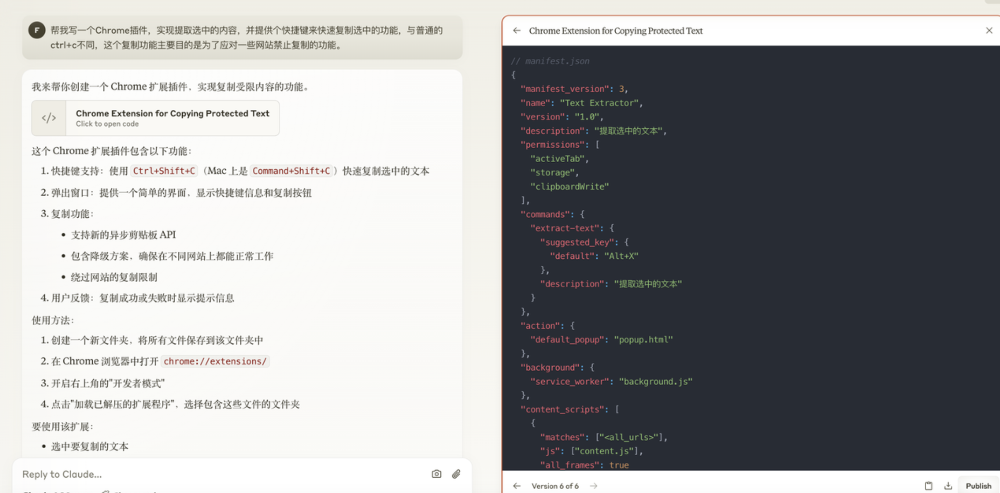
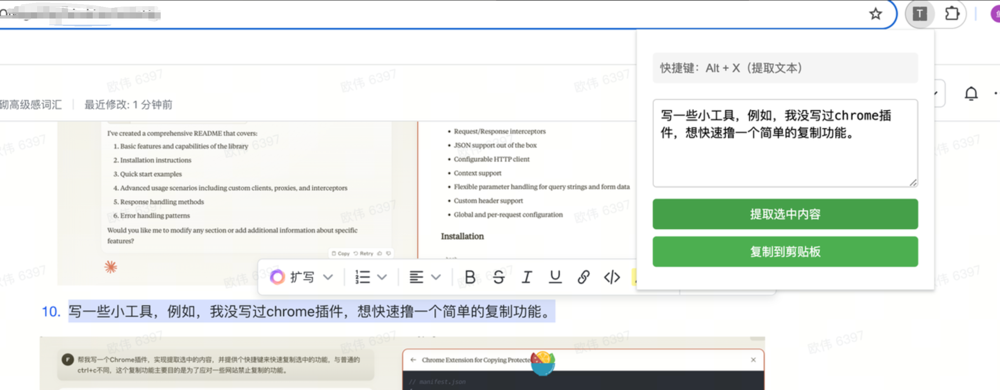
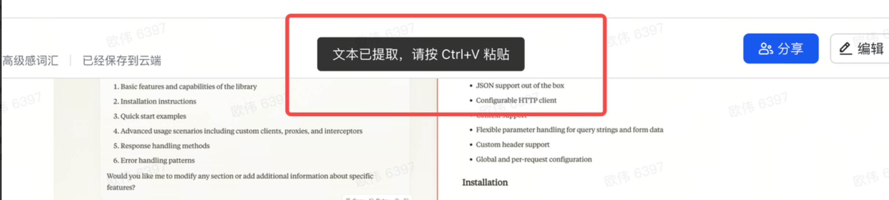
- 想搞一个支持解析嵌套String的JSON解析器，并支持一键部署：
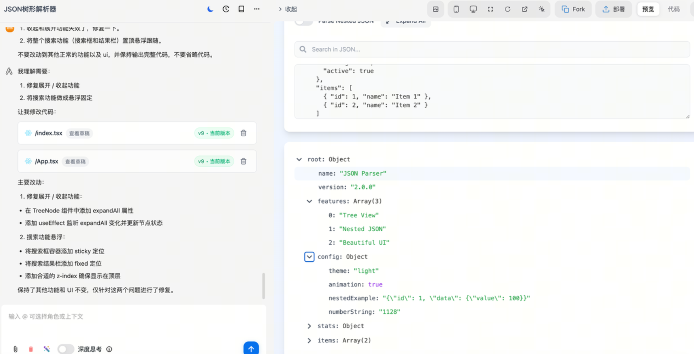
类似的一站式应用构建工具：https://bolt.new ，https://v0.dev/
以及其他一些用LLM做的简单插件：
https://chromewebstore.google.com/detail/linguaswap/alccaibaldgnhnfbooofkmdljijcemie
https://chromewebstore.google.com/detail/recharge-healthy-work-bre/miipdoobdjndomfgfdbkiibiagnehlog
问题排查
-
例如你知道这个BUG可能在某个地方（范围），但我不知道具体问题，让LLM给你一份可能出现故障的点列表，以供查看。
-
把错误信息复制/粘贴给它，然后询问它出了什么问题/如何修复它。大部分情况下都可以地指示出了什么问题 + 如何修复它的分步说明。（特别是环境问题）
-
当错误信息过于冗长，无法解读时，LLM也可以帮你快速解读错误，定位可能的原因。
分析代码
解读一些比较混乱的代码，对代码复杂性进行分析等。
例如，看不懂的shell脚本，混淆后的js代码，以及你不理解的代码，有时候他不一定能给你答案，但他可能给你一个好思路。
通用代码&代码补全
写一些通用代码，例如shell命令，通用函数等等，例如，实现一个方法合并两个map，图像alpha通道处理等等。
梳理逻辑转换图示
-
有时候想要个图示，懒得时候不想画，可以快速让ai撸一个。让它生成mermaid或plantuml，或者用html实现，效果相对比较好，适用于简单的图示。
-
把代码或者相关逻辑作为输入，让LLM帮你转换为相应的图示。（依赖关系，类关系，执行流程等等）
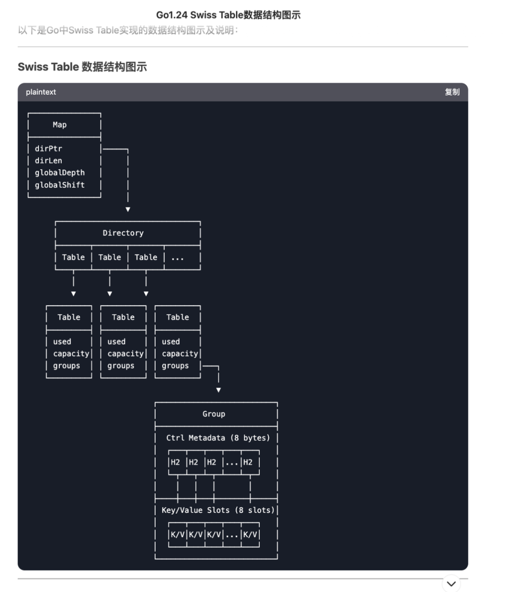
3. 将文字描述的流程转换为流程图。
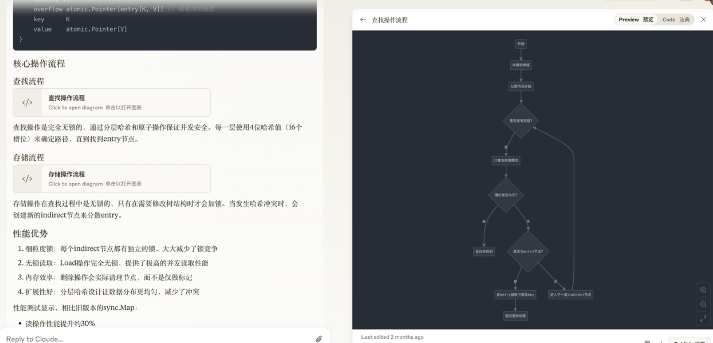
生成文档
自动文档生成（API文档，Readme，代码功能文档，注释等）。
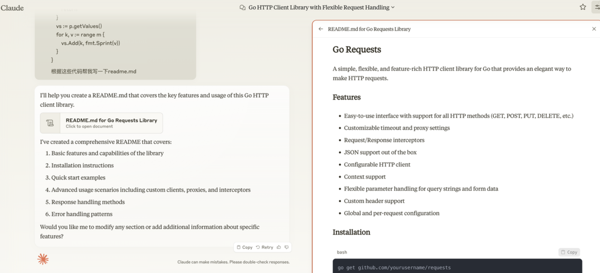
代码重构
-
分解长函数，分解条件语句等。
-
代码翻译，例如Python2Go，Go2Rust。
学习或上手新东西
快速获得可用功能或语法相关问题的答案，当作一个参考手册来使用。例如，对于一些刚上手的依赖或语言，不知道怎么使用。
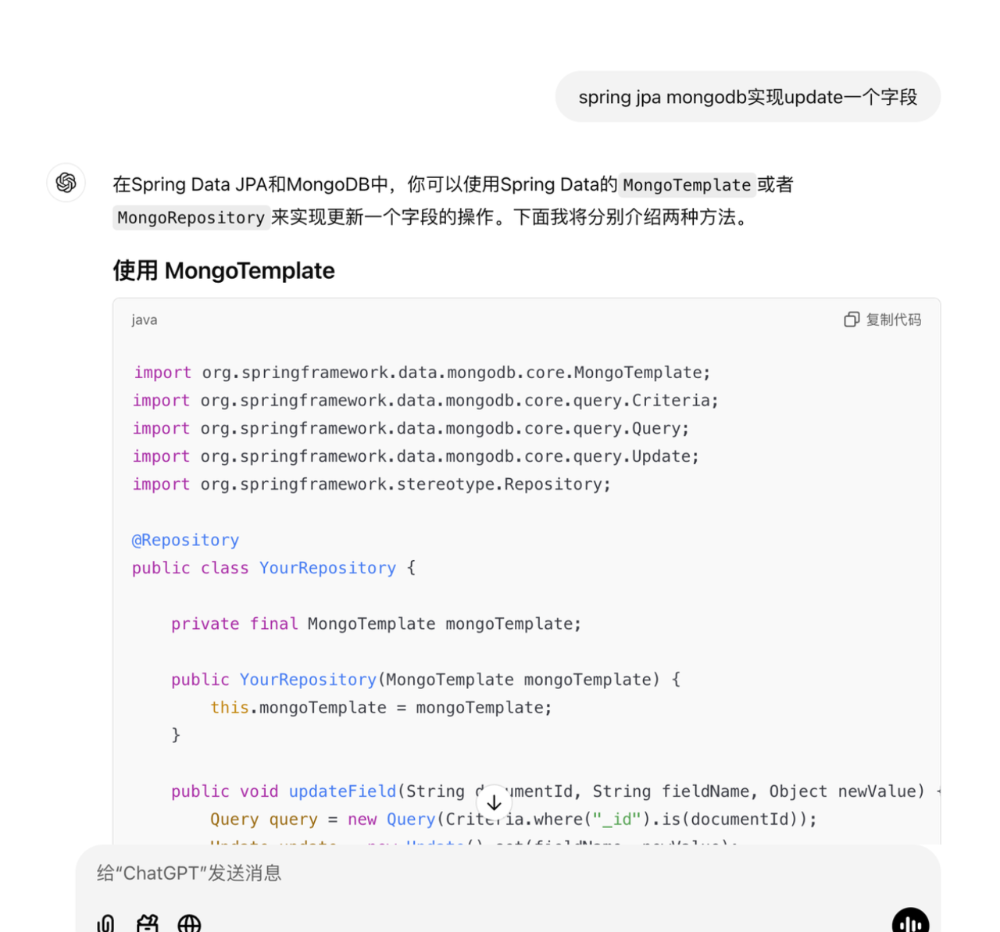
其他应用场景
还有许许多多的应用场景，欢迎补充。
-
解读论文。
-
网站SEO优化。
-
review文档等，提高文档的简洁性、清晰度、语法和拼写能力。偶尔有惊喜。
-
总结内容，例如长篇文章、论文和写得不好的邮件。
-
脑暴（使用人工智能进行内容写作，并作为头脑风暴伙伴。）
-
数据分析（输出数据简报），写SQL。
-
语言翻译，代码重构。样板代码生成、格式化和重构等任务可以由 AI 处理，从而让开发人员能够专注于更复杂的问题。
-
图生代码，文生ui。
一些想法
- 关于AI未来是否会取代程序员
先说结论个人认为目前的人工智能离取代程序员还很远，但是他是可以增强程序员的能力的，大大的利好。
-
**需求是复杂的。**其实编码一直都不是难事，难的是需求。以足够具体的方式了解自己想要从软件中得到什么。它缺乏软件工程中至关重要的人类创造力、直觉和解决问题的技能。
-
软件开发中的人工智能更擅长自动执行重复的编码任务，这可以使程序员能够专注于复杂、高水平的软件工程挑战和创新。
-
AI的工作是快速，但你的工作是优秀。人工智能的核心是速度。解决重复的问题，使我们能够将节省下来的时间投入到提高质量上，提高自身的价值！人工智能知道如何节省时间。而你知道如何设计和构建出色的程序！
-
AI目前终究还只是工具，能否提效还取决于使用方式。
极端情况下，不排除LLM会降低你效率的可能，因为你无法保证生成代码或回答的正确性，错误的答案也会分散注意力，还需要有一定的判断能力，引导他给出正确的答案，可能不如自己写来的快，所以什么样的问题适合使用AI，也需要一定的经验。要成为一名拥有代码生成工具的高效程序员，你首先必须具备成为一名没有代码生成工具的高效程序员的素质。
相关学习资料
OpenAI Meta Prompt：https://platform.openai.com/docs/guides/prompt-generation
GPT商店，看看有没有惊喜：https://chatgpt.com/gpts
使用gpt将idea实现的一个例子：https://medium.com/design-bootcamp/from-idea-to-working-app-a-complete-guide-to-building-with-ai-coders-b7e3d3f7a644
cursorrule：https://github.com/PatrickJS/awesome-cursorrules
生成并部署全栈Web和移动应用程序：https://bolt.new ，https://v0.dev/